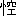

Aozora work 004094
Public-domain Japanese literature
軒もる月
のきもるつき
- First published
- 「毎日新聞」1895（明治28）年4月3、5日
- Aozora release
- Orthography
- 新字旧仮名
- Edition
- 全集樋口一葉 第二巻 小説編二〈復刻版〉
- Publisher
- 小学館
- Source
- Aozora Bunko card
Learner profile
Difficulty statistics
49out of 100
Model blue-sora-difficulty-v1 · status: ok
- Words
- 2,208
- Characters
- 3,618
- Sentences
- 74
- Average sentence
- 29.8 words
- Unique words
- 738
- Unique kanji
- 465
- Single-use words
- 482 · 65.3%
- Single-use kanji
- 257
- Lexical rarity
- 35.8 · weight 55%
- Kanji rarity
- 62.0 · weight 25%
- Sentence complexity
- 71.0 · weight 20%
- Lexical surprisal
- 3.075
- Kanji surprisal
- 3.049
Online reader
Read here
「我が良人は今宵も帰りのおそくおはしますよ。我が子は早く睡りしに、帰らせ給はゞ興なくや思さん。大路の霜に月氷りて、踏む足いかに冷たからん。炬燵の火もいとよし、酒もあたゝめんばかりなるを。時は今何時にか、あれ、空に聞ゆるは上野の鐘ならん。二ツ三ツ四ツ、八時か、否、九時になりけり。さても遅くおはします事かな、いつも九時のかねは膳の上にて聞き給ふを。それよ、今宵よりは一時づゝの仕事を延ばして、この子が為の収入を多くせんと仰せられしなりき。火気の満たる室にて頸やいたからん、振あぐる鎚に手首や痛からん」
女は破れ窓の障子を開らきて外面を見わたせば、向ひの軒ばに月のぼりて、此処にさし入る影はいと白く、霜や添ひ来し身内もふるへて、寒気は肌に針さすやうなるを、しばし何事も打わすれたる如く眺め入て、ほと長くつく息、月かげに煙をゑがきぬ。
「桜町の殿は最早寝処に入り給ひし頃か。さらずは燈火のもとに書物をや開き給ふ。然らずは机の上に紙を展べて、静かに筆をや動かし給ふ。書かせ給ふは何ならん、何事かの御打合せを御朋友の許へか、さらずば御母上に御機嫌うかゞひの御状か、さらずば御胸にうかぶ妄想のすて所、詩か歌か。さらずば、さらずば、我が方に賜はらんとて甲斐なき御玉章に勿躰なき筆をや染め給ふ。
幾度幾通の御文を拝見だにせぬ我れ、いかばかり憎くしと思しめすらん。拝さばこの胸寸断になりて、常の決心の消えうせん覚束なさ。ゆるし給へ、我れはいかばかり憎くき物に覚しめされて、物知らぬ女子とさげすみ給ふも厭はじ。我れはかゝる果敢なき運を持ちてこの世に生れたるなれば、殿が憎くしみに逢ふべきほどの果敢なき運を持ちて、この世に生れたるなれば、ゆるし給へ、不貞の女子に計はせさせ給ふな、殿。
卑賤にそだちたる我身なれば、始よりこの以上を見も知らで、世間は裏屋に限れる物と定め、我家のほかに天地のなしと思はゞ、はかなき思ひに胸も燃えじを、暫時がほども交りし社会は夢に天上に遊べると同じく、今さらに思ひやるも程とほし。身は桜町家に一年幾度の出替り、小間使といへば人らしけれど、御寵愛には犬猫も御膝をけがす物ぞかし。
言はゞ我が良人をはづかしむるやうなれど、そもそも御暇を賜はりて家に帰りし時、聟と定まりしは職工にて工場がよひする人と聞きし時、勿躰なき比らべなれど、我れは殿の御地位を思ひ合せて、天女が羽衣を失ひたる心地もしたりき。
よしやこの縁を厭ひたりとも、野末の草花は書院の花瓶にさゝれん物か。恩愛ふかき親に苦を増させて、我れは同じき地上に彷遑ん身の、取あやまちても天上は叶ひがたし。もし叶ひたりとも、そは邪道にて、正当の人の目よりはいかに汚らはしく浅ましき身とおとされぬべき。我れはさても、殿をば浮世に誹らせ参らせん事くち惜し。御覧ぜよ、奥方の御目には我れを憎しみ、殿をば嘲りの色の浮かび給ひしを」
女子は太息に胸の雲を消して、月もる窓を引たつれば、音に目さめて泣出る稚児を、「あはれ可愛し、いかなる夢をか見つる。乳まいらせん」と懐あくれば、笑みてさぐるも憎くからず、「勿躰なや、この子といふ可愛きもあり。此子が為、我が為、不自由あらせじ、憂き事のなかれ、少しは余裕もあれかしとて、朝は人より早く起き、夜はこの通り更けての霜に寒さを堪へて、『袖よ、今の苦労は愁らくとも、暫時の辛棒ぞしのべかし。やがて伍長の肩書も持たば、鍛工場の取締りとも言はれなば、家は今少し広く、小女の走り使ひを置きて、そのかよわき身に水は汲まさじ。我れを腑甲斐なしと思ふな。腕には職あり、身は健かなるに、いつまでかくてはあらぬ物を』と口癖に仰せらるゝは、何所やら我が心の顔に出でゝ、卑しむ色の見えけるにや。恐ろしや、この大恩の良人に然る心を持ちて、仮にもその色の顕はれもせば。
父の一昨年うせたる時も、母の去年うせたる時も、心からの介抱に夜るも帯を解き給はず、咳き入るとては背を撫で、寐がへるとては抱起しつ、三月にあまる看病を人手にかけじと思し召の嬉しさ、それのみにても我れは生涯大事にかけねばなるまじき人に、不足らしき素振のありしか。我れは知らねど、さもあらば何とせん。果敢なき楼閣を空中に描く時、うるさしや我が名の呼声、袖、何せよ彼せよの言付に消されて、思ひこゝに絶ゆれば、恨をあたりに寄せもやしたる。勿躰なき罪は我が心よりなれど、桜町の殿といふ面かげなくば、胸の鏡に映るものもあらじ。罪は我身か、殿か、殿だになくは我が心は静なるべきか。否、かゝる事は思ふまじ。呪咀の詞となりて忌むべき物を。
母が心の何方に走れりとも知らで、乳に倦きれば乳房に顔を寄せたるまゝ思ふ事なく寐入し児の、頬は薄絹の紅さしたるやうにて、何事を語らんとや、折々曲ぐる口元の愛らしさ、肥えたる腮の二重なるなど、かかる人さへある身にて、我れは二タ心を持ちて済むべきや。夢さら二タ心は持たぬまでも、我が良人を不足に思ひて済むべきや。はかなし、はかなし、桜町の名を忘れぬ限り、我れは二タ心の不貞の女子なり」
児を静かに寝床にうつして、女子はやをら立あがりぬ。眼ざし定まりて口元かたく結びたるまゝ、畳の破れに足も取られず、心ざすは何物ぞ。葛籠の底に納めたりける一二枚の衣を打かへして、浅黄ちりめんの帯揚のうちより、五通六通、数ふれば十二通の文を出して旧の座へ戻れば、蘭燈のかげ少し暗きを、捻ぢ出す手もとに見ゆるは殿の名。「よし匿名なりとも、この眼に感じは変るまじ。今日まで封じを解かざりしは、我れながら心強しと誇りたる浅はかさよ。胸のなやみに射る矢のおそろしく、思へば卑怯の振舞なりし。身の行ひは清くもあれ、心の腐りのすてがたくば、同じ不貞の身なりけるを、いざさらば心試しに拝し参らせん。殿も我が心を見給へ、我が良人も御覧ぜよ。
神もおはしまさば我が家の軒に止まりて御覧ぜよ、仏もあらば我がこの手元に近よりても御覧ぜよ。我が心は清めるか濁れるか」
封じ目ときて取出せば一尋あまりに筆のあやもなく、有難き事の数々、辱じけなき事の山々、思ふ、恋ふ、忘れがたし、血の涙、胸の炎、これ等の文字を縦横に散らして、文字はやがて耳の脇に恐しき声もて くぞかし。一通は手もとふるへて巻納めぬ、二通も同じく、三通四通五六通より少し顔の色かはりて見えしが、八九十通十二通、開らきては読み、よみては開らく、文字は目に入らぬか、入りても得よまぬか。
くぞかし。一通は手もとふるへて巻納めぬ、二通も同じく、三通四通五六通より少し顔の色かはりて見えしが、八九十通十二通、開らきては読み、よみては開らく、文字は目に入らぬか、入りても得よまぬか。
長なる髪をうしろに結びて、旧りたる衣に軟へたる帯、やつれたりとも美貌とは誰が目にも許すべし。「あはれ果敢なき塵塚の中に運命を持てりとも、穢なき汚れは蒙むらじと思へる身の、猶何所にか悪魔のひそみて、あやなき物をも思はするよ。いざ雪ふらば降れ、風ふかば吹け、我が方寸の海に波さわぎて、沖の釣舟おもひも乱れんか、凪ぎたる空に鴎なく春日のどかになりなん胸か、桜町が殿の容貌も今は飽くまで胸にうかべん。我が良人が所為のをさなきも強いて隠くさじ。百八煩悩おのづから消えばこそ、殊更に何かは消さん。血も沸かば沸け、炎も燃へばもへよ」とて、微笑を含みて読みもてゆく、心は大滝にあたりて濁世の垢を流さんとせし、某の上人がためしにも同じく、恋人が涙の文字は幾筋の滝のほとばしりにも似て、気や失なはん、心弱き女子ならば。
傍には可愛き児の寐姿みゆ。膝の上には、「無情の君よ、我れを打捨て給ふか」と、殿の御声ありあり聞えて、外面には良人や戻らん、更けたる月に霜さむし。
「たとへば我が良人、今此処に戻らせ給ふとも、我れは恥かしさに面あかみて此膝なる文を取かくすべきか。恥づるは心の疚ましければなり、何かは隠くさん。
殿、今もし此処におはしまして、例の辱けなき御詞の数々、さては恨みに憎くみのそひて御声あらく、さては勿躰なき御命いまを限りとの給ふとも、我れはこの眼の動かん物か、この胸の騒がんものか。動くは逢見たき欲よりなり、騒ぐは下に恋しければなり」
女は暫時 
（終）
Source and edition notes
底本：「全集樋口一葉 第二巻 小説編二〈復刻版〉」小学館
1979（昭和54）年10月1日第1版第1刷発行
1996（平成8）年11月10日復刻版第1刷発行
初出：「毎日新聞」
1895（明治28）年4月3日、5日
※「良人」に対する「をつと」と「おつと」、「女子」に対する「をなご」と「おなご」の混在、旧仮名遣いにはそわないと思われるものも含めて、ルビは全て底本通りとしました。
入力：もりみつじゅんじ
校正：浅原庸子
2003年3月23日作成
青空文庫作成ファイル：
このファイルは、インターネットの図書館、青空文庫（http://www.aozora.gr.jp/）で作られました。入力、校正、制作にあたったのは、ボランティアの皆さんです。